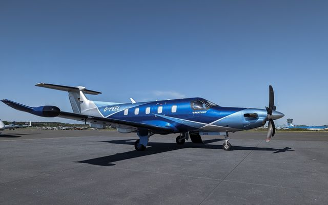
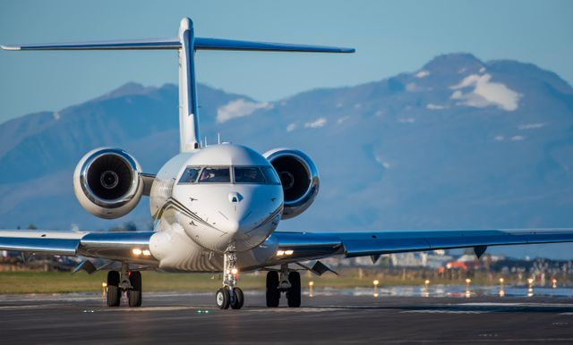
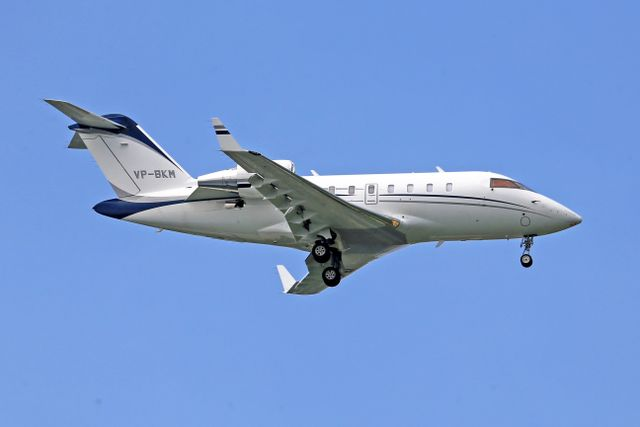

Pilatus PC-12
De PC-12 van Pilatus levert uitzonderlijke prestaties. Dankzij het vermogen om op korte en zelfs onverharde landingsbanen te landen, brengt hij jou en je viervoeter rechtstreeks en veilig naar de meest afgelegen droombestemmingen.

- Passagiers: 6 - 8 personen
- Crew: 1 - 2 piloten
- Cruise snelheid: 528 km/u
- Reisafstand: ca. 3.400 km
Pilatus PC-24
De ultieme “Super Versatile Jet”. De PC-24 combineert het comfort van een ruime jet met de flexibiliteit om op korte en onverharde banen te landen, ideaal om dicht bij je favoriete natuur- of vakantiebestemming te geraken.

- Passagiers: 8 - 10 personen
- Crew: 1 - 2 piloten
- Cruise snelheid: 815 km/u
- Reisafstand: ca. 3.700 km
Bombardier Challenger 350
Ideaal voor langere reizen door Europa en daarbuiten. Met een royale stand-up cabine, een vlakke vloer en volop bewegingsvrijheid is er meer dan genoeg plek voor een vertrouwde mand en comfortabele speelruimte.

- Passagiers: 9 - 10 personen
- Crew: 2 piloten + 1 stewardess/dierenverzorger
- Cruise snelheid: 870 km/u
- Reisafstand: ca. 5.926 km